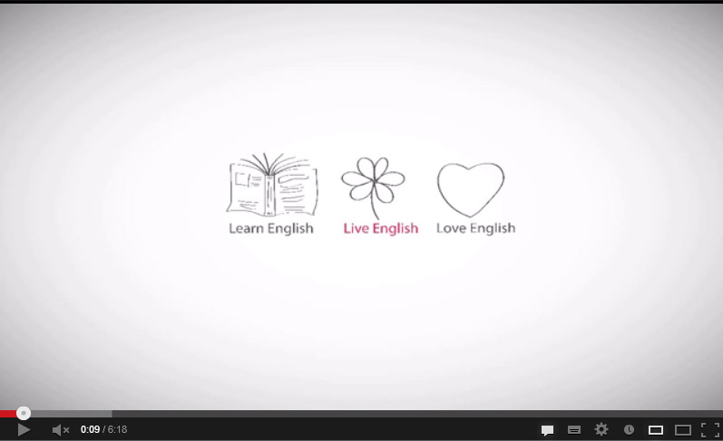

сайтам Санкт-Петербурга О сайте
Урок 1. Present Continuous - настоящее длительное время
- Материалы для скачивания
- Present Continuous
- Образование Present Continuous
- Случаи употребления Present Continuous
1. Материалы для скачивания
- Таблица очень важных правил (2,3 Mb)
- Сто полезных упражнений (1,8 Mb)
- Краткий курс с примерами (590,7 КБ)
2. Present Continuous
Времена группы Continuous указывают на процесс, действие, длящееся в определенный момент в прошлом, настоящем или будущем.
Время Present Continuous обычно указывает на процесс, длящийся непосредственно в момент речи. На это могут указывать контекст или такие слова, как now (сейчас), at the moment (в текущий момент) и т.п.:
Sally is doing her homework at the moment.
Салли сейчас делает домашнее задание.
Dad and me are fishing now.
Мы с папой сейчас рыбачим.
3. Образование Present Continuous
- Утвердительные предложения:
-
I am playing
You are playing
He / she / it is playing
We are playing
You are playing
They are playing - Вопросительные предложения:
-
Am I playing?
Are you playing?
Is he / she / it playing?
Are we playing?
Are you playing?
Are they playing? - Отрицательные предложения:
-
I am not playing
You are not playing
He / she / it is not playing
We are not playing
You are not playing
They are not playing
Для того, чтобы поставить глагол в форму времени Present Continuous, требуется вспомогательный глагол to be в настоящем времени и причастие настоящего времени (Participle I) смыслового глагола.
- To be в настоящем времени имеет три формы:
-
am – 1 лицо, ед. ч. (I am shaving.)
is – 3 лицо, ед. ч. (He is reading.)
are – 2 лицо ед. ч. и все формы мн. ч. (They are sleeping.) - Примечание:
Личные местоимения и вспомогательный глагол часто сокращаются до I’m, he’s, she’s, it’s, we’re, you’re, they’re.
Причастие настоящего времени (Participle I) можно получить, прибавив к начальной форме значимого глагола окончание -ing:
jump – jumping, live – living
В вопросительном предложении вспомогательный глагол выносится на место перед подлежащим, а значимый глагол остается после него:
Why are you laughing?
Почему ты смеешься?
Are you using this dictionary?
Вы используете этот словарь?
В отрицательных предложениях за вспомогательным глаголом следует отрицательная частица not. Формы is и are при этом могут быть сокращены до isn’t и aren’t соответственно.
Radio is not (isn’t) working.
Радио не работает.
3. Случаи употребления Present Continuous

Указание на процесс, происходящий непосредственно в момент разговора:
The doctor is conducting an operation now.
Врач сейчас проводит операцию.
Описание характерных свойств человека, часто с негативной окраской:
Why are you always interrupting people?
Почему ты вечно перебиваешь людей?
He is always shouting at me.
Он всегда на меня орет.
Запланированное действие в будущем, часто с глаголами движения:
We are landing in Heathrow in 20 minutes.
Мы приземляемся в Хитроу через 20 минут.
- Примечание:
Английские глаголы, связанные с восприятием (notice, hear, see, feel ...), эмоциями (love, hate, like ...), процессами умственной деятельности (think, believe, understand ...), владением (have, possess ...) не используются во временах группы Continuous, потому что они сами по себе обозначают процесс. Вместо них используется время Present Simple:
I hear you, don’t shout.
Я слышу тебя, не кричи.
I love pancakes.
Я люблю блинчики.